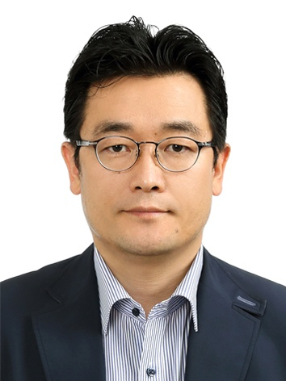

BSH International Co., Ltd.는 의료, 글로벌 비즈니스, 경영 교육을 아우르는 종합 컨설팅 기업입니다. 상담학 박사와 경영학 박사 학위를 겸비한 전문성을 바탕으로 외국인 환자 유치, 한국 중소기업의 해외 진출 지원, 경영·리더십 코칭까지 폭넓은 영역에서 신뢰할 수 있는 파트너 역할을 합니다.
우리는 한국이 가진 우수한 의료 기술과 제품, 그리고 사람을 세계와 연결합니다. 1차적으로 일본·몽골·중국을 중심으로, 향후 아시아 전역과 세계 시장으로 신뢰의 네트워크를 확장해 나갑니다.
전문성과 정직함을 바탕으로 한 서비스로 고객의 믿음에 보답합니다.
사람, 기업, 시장을 잇는 가교 역할로 새로운 기회를 만듭니다.
개인과 기업이 함께 발전하는 파트너십을 추구합니다.

안녕하십니까, BSH International Co., Ltd. 대표이사입니다.
저는 오랜 시간 사람의 마음을 이해하는 상담심리학과, 조직과 시장을 움직이는 경영학을 함께 공부해왔습니다. 이 두 가지 배움은 저에게 하나의 질문으로 이어졌습니다. “사람과 사람, 나라와 나라가 진정으로 신뢰하며 함께 성장하려면 무엇이 필요할까?”
그 답을 찾아가는 과정에서 BSH International 주식회사를 세워 그 출발을 하였습니다.
한국은 세계가 인정하는 의료 기술과 정성스러운 진료 문화를 가지고 있습니다. 또한 IT, 화장품, 식품 등 다양한 분야에서 우수한 제품을 만들어내는 많은 중소기업들이 있습니다. 저는 이 소중한 가치들이 한국 안에만 머물지 않고, 아시아를 비롯한 세계 곳곳의 더 많은 사람들에게 닿기를 바라는 마음으로 이 길을 걷고 있습니다.
해외에서 한국을 찾는 환자분들께는 믿을 수 있는 의료진과 따뜻한 동행을, 좋은 제품을 만들어온 한국의 중소기업들에게는 세계로 나아가는 든든한 다리가 되어드리고자 합니다. 그리고 그 모든 과정에서, 서로가 손해 보지 않고 함께 웃을 수 있는 진정한 상생(win-win)을 만들어가는 것이 저와 BSH International이 변함없이 지키고자 하는 약속입니다.
사람의 마음을 헤아리는 상담가의 시선과, 비즈니스를 성장시키는 경영자의 전문성. 이 두 가지를 가지고 한국과 세계를 잇는 신뢰의 다리가 되겠습니다. 앞으로도 한 분 한 분, 한 기업 한 기업과 진심으로 동행하겠습니다.
감사합니다.
BSH International Co., Ltd. 대표이사
백승화(白承和) · Seunghwa Baek
※ 상세 경력, 학력, 자격사항 등은 추가 정보 제공 시 보강될 예정입니다.